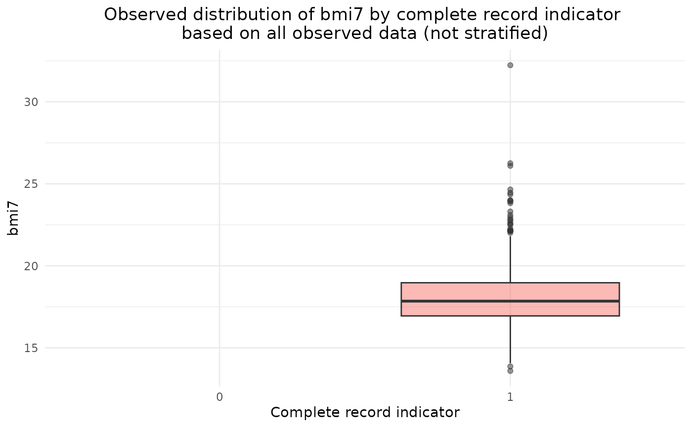
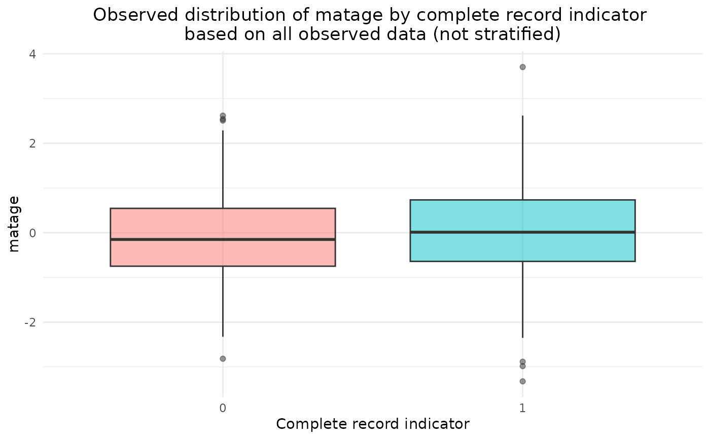
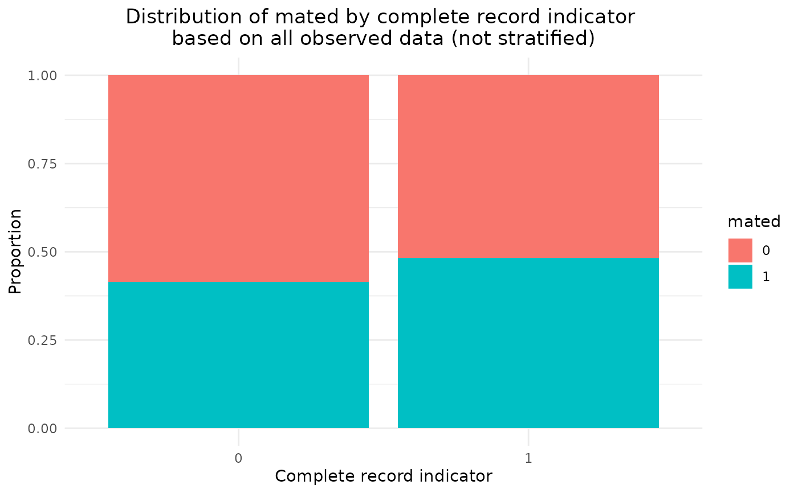
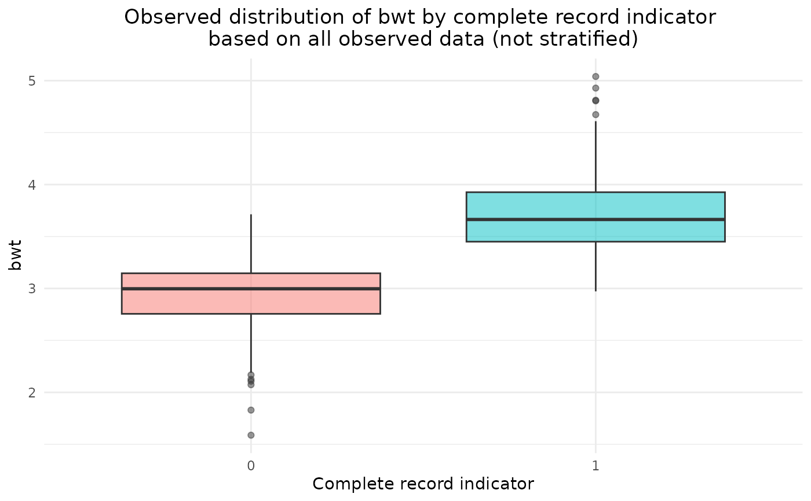
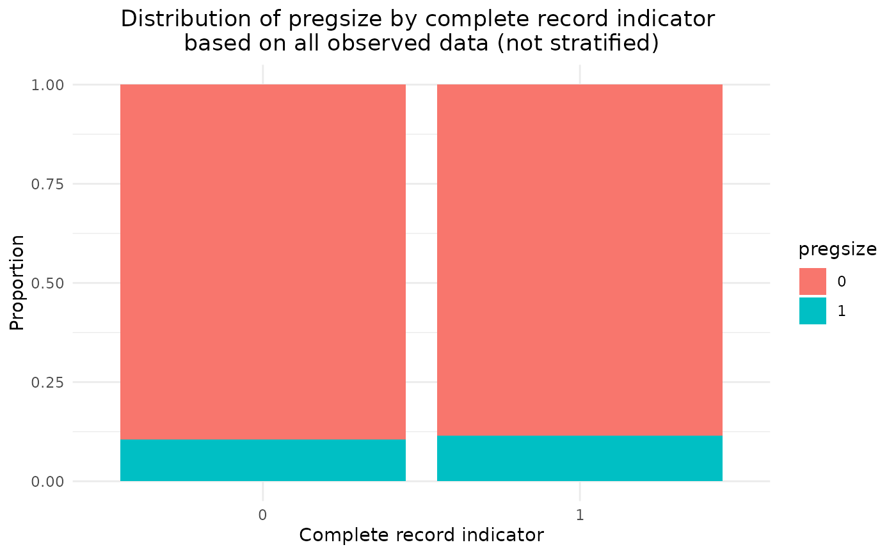

Summarise the data distribution for complete and incomplete records
Source:R/summMissData.R
summMissData.RdProduces a table of descriptive statistics for the analysis model outcome ('y') and covariate ('covs') variables, stratified by the complete record indicator ('r_cra') and optionally, by other stratification variable(s). Alternatively, 'y' can indicate the primary variable of interest, e.g. 'y' could refer to an exposure or intervention, with all other variables listed in 'covs'. The table displays the percentage of missing values for each variable, plus the mean and standard deviation of numeric variables, and frequency and percentage of categorical variables. Optional plots display box plots for numeric variables and stacked bar charts for categorical variables.
Usage
summMissData(
y,
r_cra,
data,
covs = NULL,
by = NULL,
plot = TRUE,
plotprompt = TRUE,
message = TRUE,
...
)Arguments
- y
The analysis model outcome variable(s), specified as a string (space delimited) or a list
- r_cra
The complete record indicator variable, which must be a factor
- data
A data frame containing the specified analysis model outcome, covariate(s), and if specified, stratification variable(s)
- covs
Optional analysis model covariate(s), specified as a string (space delimited) or a list
- by
Optional additional stratification variable(s); if specified, the data are subsetted according to both the complete record indicator and the values of the stratification variable(s) and summary data are displayed for each subset in turn
- plot
If TRUE (the default), summary plots are displayed; note that stratification variables are ignored in the plot; use plot = FALSE to disable the plots
- plotprompt
If TRUE (the default), the user is prompted before each plot is displayed; use plotprompt=FALSE to remove the prompt
- message
If TRUE (the default), displays a table of descriptive statistics comparing complete and incomplete records; use message = FALSE to suppress the message
- ...
Further arguments passed to table1
Value
A summary of descriptive statistics comparing complete and incomplete records and, optionally, descriptive plots.
Details
The summary table is created using the table1 function. Further arguments can be passed to this function - see the help file for table1 for more information. Note that the 'transpose' feature is not available. The summary table and plots can be used to compare the characteristics of complete and incomplete records. Note that there may be differences in variable distributions between complete and incomplete records if data are missing at random or missing not at random. Therefore, any observed differences cannot be used as evidence for or against the data missing at random assumption.
Examples
summMissData(y="bmi7", r_cra="r", data=bmi, covs="matage mated bwt pregsize")
#> 0 1 Overall
#>
#> (N=408) (N=592) (N=1000)
#>
#> bmi7
#>
#> Mean (SD) NA (NA) 18 (2.0) 18 (2.0)
#>
#> Missing 408 (100%) 0 (0%) 408 (40.8%)
#>
#> matage
#>
#> Mean (SD) -0.067 (0.98) 0.047 (1.0) 0.00052 (1.0)
#>
#> mated
#>
#> 0 239 (59%) 306 (52%) 545 (54%)
#>
#> 1 169 (41%) 286 (48%) 455 (46%)
#>
#> bwt
#>
#> Mean (SD) 2.9 (0.32) 3.7 (0.34) 3.4 (0.50)
#>
#> pregsize
#>
#> 0 365 (89%) 524 (89%) 889 (89%)
#>
#> 1 43 (11%) 68 (11%) 111 (11%)




